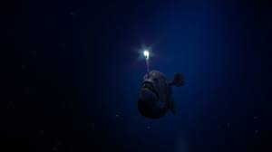
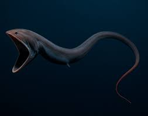
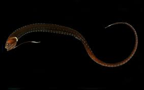
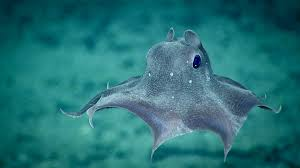
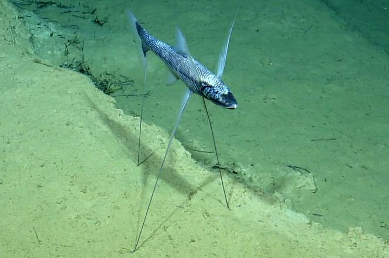

Marine Species in Midnight Zone

Anglerfish
Ikan ikonik laut dalam dengan "lampu" bioluminesensi untuk menarik mangsa di kegelapan total.

Gulper Eel
Bermulut sangat besar dan elastis, dapat menelan mangsa yang ukurannya melebihi tubuhnya.

Pasific Black Dragon
Predator garang dengan gigi panjang tajam dan cahaya bioluminesensi untuk memancing mangsaWarnanya hitam pekat (ultra-black) yang menyerap cahaya ada di pedalaman 200 – 1.000+ meter.

Giant Isopod
Krustasea raksasa yang hidup di dasar laut dalam dan terkenal tahan tekanan tinggi.

Dumbo Octopus
Cumi-cumi lucu bertelinga seperti Dumbo, bergerak lembut di kedalaman ekstrem.

Tripod Fish
Ikan unik yang berdiri menggunakan tiga sirip panjang untuk menunggu mangsa di dasar laut.